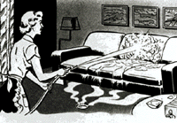

|
Bagpipes Go to the Movies
http://www.ems.psu.edu/ ~fraser/PipesMovies.html You want an action film, but your date would rather see a romantic comedy. Why not compromise on your next visit to Blockbuster and rent a bagpipe movie? Finally, thanks to this site there's an online resource detailing every cinematic appearance of the unwieldy wind instrument. Amazingly, according to the list, your choices aren't nearly as limited as you might think. Besides obvious Highland flicks like Brigadoon and Braveheart, bagpipes figure prominently in movies as diverse as Army of Darkness and Meatballs. Staying home tonight? The site thoughtfully includes TV references as well, ranging from last year's Simpsons Halloween special to a Burger King commercial. |
|||
|
The Fountainhead,
Starring Skull Force
http://dig.netcentral.net/ vx/founthd.html Robert Lee has created a site for all of you who haven't yet gotten around to drudging through the massive books of Ayn Rand. In his site, Fragile Liquid, Lee kindly hyper-condensed Rand's masterpiece The Fountainhead into 12 panels with scenes performed by a slate of action figures. Classic Comics must be shaking in its boots with compelling dialogue like this:
The cast, however, is B-list at best (no G.I. Joe or Star Wars figures here), with Howard Roark played by Skull Force and Dominique Francon played by Sue Richards of the Fantastic Four (although Lee did manage to secure Grover from Sesame Street for a jury cameo). Now we're just waiting for the Masters of the Universe version of Atlas Shrugged. |
|||
|
The Contortion
Home Page
http://www.escape. com/-silverbk/contortion/ OW! OW! OW! Man alive, this page hurts. We wouldn't have winced this much at a site dedicated to groin injuries caused by soccer balls. The human body, we quickly found out at this home page, is much more flexible than we ever imagined -- the women featured here are twisted into positions Stretch Armstrong never even tried. The photo gallery is truly a thing to behold, though there's a lot of educational merit to this site as well; the X-ray Study of a Contortionist is actually quite a fascinating read. Oh, and lest we forget (as if it needed saying) -- don't try this at home. |
|||
|
The Dead People Server
http://web.syr.edu/ ~rsholmes/dead/index.html Whatever happened to Fay Wray? Well, at least we know the original King Kong love interest is alive. All those Kennedys, dead yet or no? If you need to know if a celebrity has gone to that Great Green Room in the Sky or has been otherwise terminally inconvenienced, this is the place to find out. In many instances, author Rich Holmes has offered a nugget of insight into the famous person's demise, noting that John Belushi died of stupidity on March 5, 1982, while L. Ron Hubbard is only marginally more dead than Elvis Presley. Don't expect all your questions answered, however. Of Jimmy Hoffa, Holmes has left that passage blank. As for dead porn stars, check out http://www.xmission.com/~legalize/asm/dead-stars.html. |
|||
|
The Nurse's
Non-Medical Page
http://www.tezcat.com/ ~nurse/home.shtml  Adrian Dimond, a.k.a. the "Nurse," enhanced his Web page for Netscape 2.0 so you can bask in the glory of all its unquestionable
tastelessness. Originally, Dimond planned the site as a tribute to the band Nurse with Wound, but then abandoned that idea when
he found some other good NWW sites. "One of the things I had been seeking out on the ënet were bones and skulls and any
anatomy-related material," Dimond explained. "I never found a full skeleton or anything -- that's available now. So I thought that I
could get some interest by putting a skeleton and a whole bunch of bone-related artwork out there. I was right." So littered on his
site is an inexplicable, yet impressive selection of human skulls, idol dolls and power tools. Despite this apparent non-medical
connection, the Nurse's page has been besieged by health professionals in search of real, technical data. "I've had to post a lot of
notices to those in the nursing profession to they don't get confused."
Adrian Dimond, a.k.a. the "Nurse," enhanced his Web page for Netscape 2.0 so you can bask in the glory of all its unquestionable
tastelessness. Originally, Dimond planned the site as a tribute to the band Nurse with Wound, but then abandoned that idea when
he found some other good NWW sites. "One of the things I had been seeking out on the ënet were bones and skulls and any
anatomy-related material," Dimond explained. "I never found a full skeleton or anything -- that's available now. So I thought that I
could get some interest by putting a skeleton and a whole bunch of bone-related artwork out there. I was right." So littered on his
site is an inexplicable, yet impressive selection of human skulls, idol dolls and power tools. Despite this apparent non-medical
connection, the Nurse's page has been besieged by health professionals in search of real, technical data. "I've had to post a lot of
notices to those in the nursing profession to they don't get confused."
|
|||
|
The Nose Page
http://www.well.com/ user/cynsa/nosepage.html Home to the olfactory nerves and epicenter for sinus trouble, the nose often has been misunderstood and underrated despite its prominent position on virtually everyone's face. Now, however, you can enter the Nose Page, billed as "your source for nasal information," wherein you'll find brilliant full-color, vivid representations of noses big and small, pug and non-pug. Plus, hear how the author, Steve G. Bonorris, once put beans up his own nostrils in a heartwarming tale about the legendary Bonorris family genetic miscue. |
|||
|
Celebrity Snack Palace
http://www.inch.com/ ~snack/snack.html No celebrities, few snacks and definitely not a palace. Sample from fare that ranges from Links That Stink to the couple's William Shatner answering machine tape (with an excerpt of "Mr. Tambourine Man," featured last month in IU). Other great sections include Mounds of Sounds, which features WAV samples from Captain Beefheart and bad TV sitcoms. We also like to keep the CSP's Primal Scream button page on our hotlist; with a long scream for particularly difficult days and a short one when things are going a little better, it's a definite must to relieve a little afternoon post-lunch tension. We must warn you, some of their selections are rather graphic and more than a few are not exactly in the best taste. |
|||
|
The Trans-Canada
Traffic Lights
http://www.brandonu. ca/~ennsnr/Traffic/ The very definition of obsession, Neil Enns aims to collect images of every traffic light on the Trans-Canada Highway and post them on his site. But like the atomic scientists working on the Super Collider, it seems Enns' ambition is exceeding his budget. So far Enns has captured only a smattering of lights in his native Manitoba. He notes that he sadly lacks the economic means necessary to capture shots of lights from the far-flung stretches of the Great White North. But fear not, signalphiles, Enns has a detailed list of instructions for how you can help his project as well as a strict list of criteria for what actually constitutes a traffic light on the highway. Make sure you check out the light at Highway 155 and Highway 100 just outside of Winnepeg -- it's a beaut, eh? |
|||
|
Mr. Angst
http://unix1.utm.edu/ ~jfieser/angst.htm Perhaps the most laudable advice columnist on the Web, Mr. Angst answers all questions with hostility, offering up a vigorous attack on society and life as we know it. Even the most simple queries, such as whether Bud is the King of Beers, qualify for a lengthy answer: "Having stooped temporarily to your level, my dear Mr. Sixpack, I now elevate my discussion with the following warning. The happy-go-lucky Joe Sixpacks of the world are in for a rude awakening. Some day a can of beer will be snapped open only to have a grotesque beast lunge forth and devour its prey. That beast is life itself." Dear Abby had better watch out. |
|||
|
The Wall O'Shame
http://www.milk.com/ wall-o-shame/  As if displays of human folly weren't prevalent enough on the Web (haven't we seen enough Anna Nicole Smith shrines?), Dan Bornstein takes compiling idiocy one step further by uploading a series of exemplary inanities onto his Wall O'Shame. With a few images (though not enough) and stories ranging from lapses in NRA logic to a guy given a bill for 62 billion dollars by the IRS, The Wall O'Shame functions like a lengthened News of the Weird, culling its tidbits of absurdity from just about any source of weirdness the author comes across. For a shining example of American vacuity in its full glory, check out "I Want My Two Dollars," an amazing tale of trying to buy a burrito at Taco Bell with a $2 bill. |
|||
|
The Burrito
Personality Test
http://www.infobahn. com/pages/rito.html Surprisingly, what you order in your burrito says a great deal about your personality, or so goes the theory at this interactive homage to the world's most perfect foodstuff. An example of the wisdom of burrito analysis: Say you order chicken, cheddar cheese, tomato, onion, sour cream and salsa verde. According to the site, this means "you show an ability to bring balance and fullness to all things, including the toppings of your burrito." With dozens of burrito combinations, there's even a burrito for each of Roseanne's personalities. |
|||
|
Guest Stars
of Hawaii Five-O
http://cs.ucr.edu/ ~tutup/hstars.html You know the catch phrase "Book 'em Danno," but have you ever really noticed just who Danno was booking? At The Big Guest Stars of Five-O site, Todd Witteles has compiled a list of celebrities who appeared on television's seminal Polynesian police program. In the days before The Love Boat, this crime drama was the place for has-beens and wanna-bes alike, ranging from Alice's Mel, Vic Tayback, to the dean of physical comedy, John Ritter. And who can forget the late Robert Reed's impressive histrionics in episode 252, "The Meighan Conspiracy"? |
|||
|
Zombie Death Dungeon
http://www.gnli.com/zombie/ Let's get one thing straight right now: Zombies are not your friends. Zombies are not movie stars. Zombies have no mercy. Zombies have zero capacity to love. Zombies have but two purposes: Kill human beings and eat them. That's the message offered at this sight of extreme oddity. Look at photos of bizarre folks that seem particularly repugnant, if not zombie-like. Check out prose capturing a certain scary portion of your psyche that you typically would rather not explore. We especially liked the photos of the walking undead. It sort of reminded us of ourselves on deadline. |
|||
|
The Phallic
Symbol Page
http://www.cs.und.nodak. edu/~gibbens/phallic.html As the author notes, "Don't worry, there will not be images of some dude's schlong on here...It's strictly for phallic symbols." The most notable element is a massive root held in the hands of a bewildered fellow who doesn't know what to do. Seeing as we're based right outside of Chicago, we'll never look at the Sears Tower in quite the same way again. |
|||